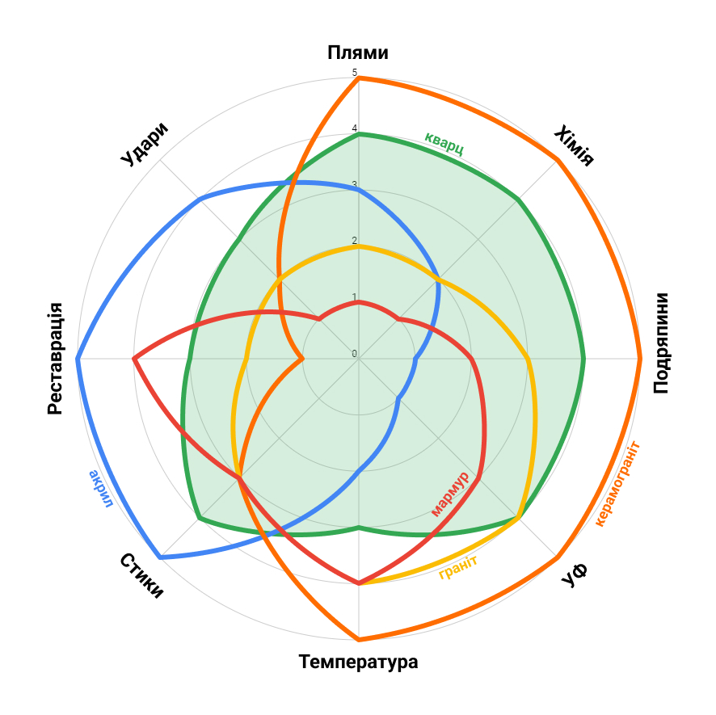
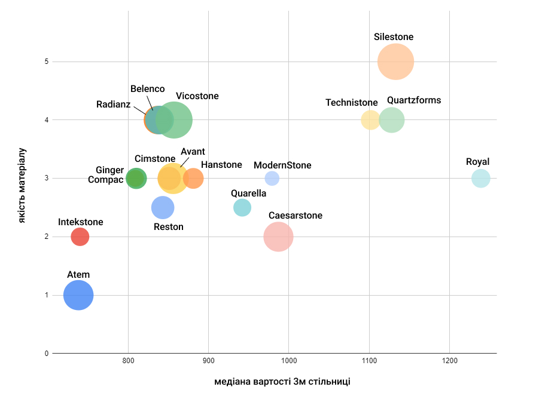

Технічні питання
Конструкція меблевих корпусів під кварцову стільницю
Ні, звичайні меблеві корпуси як під HPL/Дсп/Egger та ін. стільниці.
| Стільниця лежить на тумбах так: | а не так: |
Вагу кварцової стільниці спокійно витримує будь-яка кухонна тумба, навіть найдешевша з Епіцентру. (Триметрова стільниця важить ~80 кг)
Кріплення стільниці
Велику стільницю зазвичай ніяк не кріплять - вона непорушно лежить під власною вагою. (Триметрова стільниця важить ~80 кг тож її так просто не здвинеш) Маленькі стільнички для ванних, або острови - каменярі приклеюють до корпусів на силікон.
Каменярі зклеюють їх на двокомпонентний акриловий клей відповідного відтінку. Більше про стики деталей тут
Товщина каменю та стільниць
Стандартний слеб кварцу йде в товщині 2см. Рідко, але зустрічається матеріал товщиною 3см та 1,5см.
Стандарт: 2 см та 4 см. За бажанням можна зробити й більшу: 5, 6, 10, 15 см - яку захочете, але не менше 2 сантиметрів (товщина слебу). Нарощування товщини стільниці відбувається за рахунок приклеювання торцевої планки і ребер жорсткості (де вони потрібні).
Cтінові панелі
Їх ставлять на стільницю і приклеюють до стіни на силіконовий клей.
Головне щоб від тої стіни не відвалювались шматки і вона була більш-менш рівна (до 1 см погрішність). Вагу панелі тримає на собі стільниця, а не стіна. Штукатурена стіна, чи шпакльована, чи гола - немає різниці.
Щільові вмивальники
На щільовий вмивальник з кварцу чіпляється звичайнісінький пластиковий сифон, як і на будь-яку раковину.
Отвори під техніку (мийки, варочні та ін.)
Будь-які, які забажаєте: металеві, керамічні, акрилові, композитні… За типом монтажу мийки є:
- накладні, або верхнього монтажу
- підстільні, або нижнього монтажу
- урівень зі стільницею (рос. “заподлицо”) - це зазвичай металеві мийки
- інтегровані, тобто з кварцового агломерату
Так, можна. Ні, мийка не відвалиться. Підстільну мийку до кварцової стільниці приклеюють в 2 кроки: на силікон по периметру + на спеціальні кам’яні планки-тримачі.
Будь-які: газові, індукційні, електричні. Якщо варочна призначена для верхнього монтажу - ми так її й встановимо. Деякі варочні призначені для монтажу урівень, тобто притоплені зверху в поверхню стільниці - так теж можна, якщо у вас саме така варочна.
Все це можна встановити так, як передбачено виробником: зверху, знизу стільниці або урівень з поверхнею ("притоплено" в камінь)
Кварцові кухонні мийки
Будь-яка мийка, виготовлена з такого ж кварцу, що й стільниця - є інтегрованою. Литі мийки виготовляють на тих же заводах, що й слеби кварцу. Це монолітна конструкція з фіксованими розмірами. В Україні литі мийки з кварцового агломерату пропонують лише 2 бренди: Silestone та Quartzforms. Клеєні мийки з кваревого каменю робить кожен місцевий каменяр окремо, за вашими розмірами, зклеюючи з шматків каменю таку собі “коробочку”. Такі мийки значно дешевші литих, але мають ряд мінусів у порівнянні.
Плюси:
- це красіво, дорого, богато
- нема бортика і щілин, можна змахнути бруд зі стільниці прямо у мийку
Мінуси:
- у кварцову мийку не можна лити окріп (зливати макарони, тощо) - лопне
- не можна роняти важкий посуд - мийка лопне
- кожна 8ма клеєна мийка з кварцевого каменю дає течу впродовж 2 років після встановлення. (Статистика наших колег)
- на дні клеєної мийки під час її виготовлення фрезерують уклон для стоку води. Тобто, дно мийки не має заводського полірування як основна стільниця. До поверхні, що полірована вручну, бруд пристає більше, ніж до заводської.
Так буває у тих хазяїв, що не пильнують коло мийки з Доместосом щодня. Відмити це уже неможливо, тільки кликати полірувальника аби він за гроші “зчухав” забруднений шар каменю.
Жоден з наших співробітників та партнерів не поставив собі додому кварцову мийку, хоча мав для того всі можливості. Здогадайтесь, чому :)
Думки каменярів на цей рахунок розділяються: 45% вважають що можна, 55% кажуть що краще того не робити. Особисто ми не радимо вішати подрібнювач на клеєні мийки з кварцового агломерату, побоюючись можливої течі через вібрацію гріндера. На литі кварцові мийки можна встановлювати подрібнювач - вони монолітні і вібрація їм нічого не зробить.
Підвіконня
2 варіанти: отвір під грати або "акулячі зябра" Гратки (решітку) можете замовити будь-яку, проте бажано щоб на кутах вона мала радіус щонайменше 4мм. "Зябра" то є просто скрізні отвори в кварцовому агломераті, зроблені циліндрічною фрезою і заполіровані зсередини. Розміщення і довжина - на ваш смак.
Так, звісно що можна. Якщо ваше вікно виходить в один рівень з меблевими корпусами, то підвіконня буде монолітним розом зі стільницею. Якщо вікно вище або нижче тумб, то буде така “приступочка”.
Безшовні кварцові стільниці
Безшовними є тільки ті стільниці з каменю, габаритний розмір яких не перевищує розмірів слебу (плити матеріалу). Зазвичай це 3*1,4 метри, рідше до 3,2*1,6м. Всі інші стільниці матимуть шви, і ці шви будуть видимі, хто б що не казав. Як виглядають шви - див. нижче.
Cтики та шви
До цього краще підходити індивідуально, дивлячись на план конкретної кухні. Основні правила такі:
- шви через отвір під накладну техніку (мийку, варочну, тощо)
- шви у кутах на Г- та П-подібних стільницях
- шви подалі від робочої зони (того місця, де відбуватиметься екшн: нарізання продуктів, замішування тіста)
- шви подалі від обідньої зони (того місця на барній, де будуть ваші тарілки коли ви їсте)
Стандартів щодо товщини та зовнішнього вигляду швів немає. Наразі припустимим вважається стик, видима ширина якого до 0,6 мм, і з перепадом по висоті не більш як 0,1 мм (як листок паперу).
На світлому кварцовому агломераті стики мають бути такими:
На темних стільницях з кварцу шви такі:
Беріть до уваги, що з часом стик на темному кварцу стане трохи менш помітним.
Про матеріал
Склад та властивості
У складі 95% кварцовий пісок (кварцова крихта, природнє скло, оксид кремнію), 5% полімерна смола та пігменти-фарбники. Виготовляють кварцовий агломерат на спеціальних заводах, до місцевих обробників він приїжджає у вигляді полірованих слебів (листів), з яких уже вирізають ваші стільниці.
Ні, бо його ж не добувають в кар’єрі як мармур чи граніт, а ллють і пресують на заводах. Проте кварцовий агломерат на 95% складається з кварцового піску, а от його якраз беруть в природі.
В тій же мірі, в якій тигр є великою кицькою.
Тобто формально - так, адже кварцовий агломерат на дотик/вигляд/склад максимально подібний до каменю, і виготовляється штучним чином на заводах.
Проте, частіше за все під терміном “штучний камінь” маються на увазі геть інші матеріали: композит на основі акрилових чи поліефірних смол, з іншим мінеральним наповнювачем (не кварцовим піском) - бо так склалось історично.
Ні, там же нема чому розбухати від вологи. І плісняві нема де жити - таких пор в матеріалі нема.
Так, слабке місце кварцових стільниць, як і інших подібних (гранітних, мармурових, бетонних, керамогранітних) - це їх края. Від ударів важкими предметами можуть відколюватись шматки. Не те щоб це було супер поширеною проблемою, але трапляється. Докладніше про реставрацію див. нижче
Ні, не є, хто б вам що не казав.
Від чашки чаю чи тарілки супу їй звісно нічого не буде. Але якщо поставити кастрюлю окропу чи казан з фритюром - може лопнути. (Як і граніт, мармур, скло.) Як і чому це відбувається - дивіться тут.
Якщо вам конче необхідно ставити на стільницю киплячий борщ - беріть керамограніт або металеву ресторанну поверхню.
Так, взагалі можна, але для цього потрібно додати зусиль.
Ложкою чи виделкою - не поцарапаєте.
Якщо з силою встромити гострий кінчик ножа і з тиском прошкарябать - то може залишитись подряпина.
Наскільки важко дряпається кварцовий агломерат у порявнянні з іншими матеріалами - див. нижче.
Ми не радимо того робити. Чому?
- У вас супер швидко затупиться ніж.
- Металл ножа може “малювать” по каменю, залишаючи сірі рисочки, які треба відмивати CIF'ом або порошком для посуду.
- Якщо різати огірочок, сир, хліб - стільниці нічого не буде. Але якщо рубати м’ясо - можуть залишитись подряпини.
Догляд
Стільниця з кварцу не потребує ніякого особливого догляду, на відміну від акрилової або з натурального каменю. Дуже проста інструкція з догляду за стільницею
Полірування та реставрація
Стільниця з кварцового агломерату має готову поверхню ще з заводу-виробника, тобто каменяр в цеху її не полірує. Подряпати та “заєлозіть” поверхню побутовими речами, посудом досить важко (але можливо), тож на відміну від акрилової - кварцева стільниця зберігає зовнішний вигляд та блиск 5-10-15 років не потребуючи полірування.
На відміну від натурального каменю, на якому рекомендують періодично поновлювати просочення аби закрити природні пори від бруду - на кварцовому агломераті немає сенсу таким займатись. Тим “пропіткам” і “поліролям” просто нікуди тут проникати - пор же ж немає. Це як мазати скло поліроллю для меблів - викинуті гроші.
Кварцові стільниці гірше піддаються реставрації, ніж акрилові, але ліпше ніж керамограніт і натуральний камінь. На щастя, реставрації потребує одна стільниця з двохсот. (За нашою прискіпливою статистикою)
Оскільки форс-мажори типу сколів, подряпин, тріщин трапляються рідко - немає точного гайдлайну як їх лагодити.
Якщо з вашою кварцовою стільницею щось трапилось - надішліть фото проблеми нам на вайбер або телеграм: +380956568480, ми подивимось чим можна зарадити.
Порівняння матеріалів
За даними опитування ~50 каменеобробників, ми склали таку діаграму властивостей кварцового агломерату.
З цього видно, що за певними властивостями кварцові стільниці “програють” акрилу чи керамограніту, в той же час маючи перевагу по іншим параметрам. Можна сказати, що кварцовий агломерат наразі є “золотою серединою” між каменеподібних матеріалів.
Якщо сильно узагальнити, то ми б радили звернути увагу на кварцовий агломерат Vicostone - він один з кращих по якості, більш-менш доступний по ціні, та з хорошим асортиментом актуальних кольорів. (Ніт, ця відповідь не проплачена)
Порівняння брендів кварцу за нашою суб’єктивною оцінкою - на діаграмі нижче.
Вартість та порядок замовлення
Не існує ціни за метр кварцової стільниці. Ані за погонний, ані за квадратний. Бо кварцовий агломерат не як тканина на довжину продається, а слебами фіксованих розмірів.
Вартість вашої стільниці ви можете порахувати отут в калькуляторі. В прямокутничку показується скільки то слебів каменю піде на ваш виріб.
Приклад чому не працює “ціна за метр”: З слебу кварца можна зробити 2 стільниці по 3 метри. Або 12 метрів підвіконь 30см глибини. Або 39 метрів підвіконь 10см глибини. Або один єдиний острів 1,4 метри. Всі ці замовлення на кінець кінців коштують однаково, хоча їх метраж - ну самі бачите…
Пояснення для дівчат: коли ви збільшуєте губи філлером, то косметолог дивиться який об’єм гіалурону потрібен конкретно вам, дивиться скільки то шприців вийде, і тоді вже рахується кінцева вартість. Ви ж не можете купити рівно 0,6 або 0,8 мл філера і платити за використаний об’єм по мілілітрах, коли філер іде у шприцах по 0,5 і 1? От і з кварцовими стільницями така ж історія.
Ми не тримаємо 500+ кольорів кварцу у себе в коморі (і ніхто не тримає) - ми купляємо в постачальників слеби під конкретне замовлення.
Матеріал, якого немає в наявності або він закінчується на складі - позначено таким в каталозі/калькуляторі. Дані про наявність постачальники надають з певною затримкою, тож щоб 100% дізнатись про присутність конкретного кольору каменю на складі - зателефонуйте або напишіть нам: +380956568480 і ми їх посмикаєм :)
Ми укладаємо з замовником договір на виготовлення виробу з кварцового агломерату.
В середньому, стільниця з кварцового агломерату робиться 15 робочих днів від моменту заміру та авансу. Точні терміни виробництва ми проговорюємо при прийнятті замовлення.
Цех працює на повну потужність. Щодо наявності кольорів кварцового агломерату на поточний момент - запитуйте нас за телефоном +380956568480 (Viber, Telegram). Деякі склади з кварцовим каменем знаходяться в Одесі, тож обирати є з чого.
Якщо ви вносите аванс за замовлення, то ваш камінь неодмінно приїде до нас в цех, бодай там що русня робить!